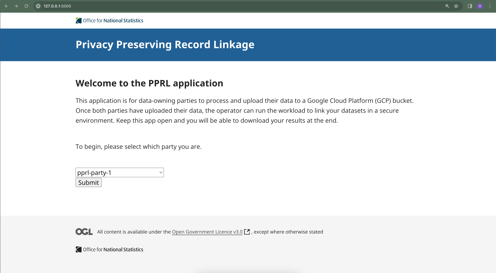

Working in the cloud
Get you and your collaborators performing linkage in the cloud
This tutorial provides an overview of how to use pprl_toolkit on Google Cloud Platform (GCP). We go over how to assemble and assign roles in a linkage team, how to set up everybody’s projects, and end with executing the linkage itself.

Above is a diagram showing the PPRL cloud architecture. The cloud demo uses a Google Cloud Platform (GCP) Confidential Space compute instance, which is a virtual machine (VM) using AMD Secure Encrypted Virtualisation (AMD-SEV) technology to encrypt data in-memory. The Confidential Space VM can also provide cryptographically signed documents, called attestations, which the server can use to prove that it is running in a secure environment before gaining access to data.
Assembling a linkage team
There are four roles to fill in any PPRL project: two data-owning parties, a workload author, and a workload operator. A workload is how we refer to the resources for the linkage operation itself (i.e. the containerised linkage code and the environment in which to run it.)
These roles need not be fulfilled by four separate people. It is perfectly possible to perform PPRL on your own, or perhaps you are working under a trust model that allows one of the data-owning parties to author the workload while the other is the operator.
In fact, pprl_toolkit is set up to allow any configuration of these roles among up to four people.
In any case, you must decide who will be doing what from the outset. Each role comes with different responsibilities, but all roles require a GCP account and access to the gcloud command-line tool. Additionally, everyone in the linkage project will need to install pprl_toolkit.
Data-owning party
Often referred to as just a party, a data owner is responsible for the storage and preparation of some confidential data. During set-up, each party also sets up a storage bucket, a key management service, and a workload identity pool that allows the party to share permissions with the server during the linkage operation.
They create a Bloom filter embedding of their confidential data using an agreed configuration, and then upload that to GCP for processing. Once the workload operator is finished, the parties are able to retrieve their linkage results.
Workload operator
The workload operator runs the linkage itself using some embedded data from the parties and an image from the author. They are responsible for setting up and running a Confidential Space in which to perform the linkage. This setting ensures that nobody ever has access to all the data at once, and that the data can only be accessed via the linkage code itself.
Creating your GCP projects
Once you have decided who will be playing which role(s), you need to decide on a naming structure and make some GCP projects. You will need a project for each member of the linkage project - not one for each role. The names of these projects will be used throughout the cloud implementation, from configuration files to buckets. As such, they need to be descriptive and unique.
Since Google Cloud bucket names must be globally unique, we highly recommend using a hash in your project names to ensure that they are unique. This will ensure that bucket names are also globally unique.
Our aim is to create a globally unique name (and thus ID) for each project.
For example, say the US Census Bureau and UK Office for National Statistics (ONS) are looking to link some data on ex-patriated residents with PPRL. Then they might use us-cb and uk-ons as their party names, which are succinct and descriptive. However, they are generic and rule out future PPRL projects with the same names.
As a remedy, they could make a hash of their project description to create an identifier:
$ echo -n "pprl us-cb uk-ons ex-pats-analysis" | sha256sum
d59a50241dc78c3f926b565937b99614b7bb7c84e44fb780440718cb2b0ddc1b -This is very long. You might only want to use the first few characters of this hash. Note that Google Cloud bucket names also can’t be more than 63 characters long without dots.
You can trim it down like so:
$ echo -n "pprl us-cb uk-ons ex-pats-analysis" | sha256sum | cut -c 1-7
d59a502So, our names would be: uk-ons-d59a502, us-cb-d59a502. If they had a third-party linkage administrator (authoring and operating the workload), they would have a project called something like admin-d59a502.
Setting up your projects
Once you have decided on a naming structure, it is time to create the GCP projects. Each project will need specific Identity and Access Management (IAM) roles granted to them by the project owner’s GCP Administrator. Which IAM roles depends on the linkage role they are playing. If someone is fulfilling more than one role, they should follow all the relevant sections below.
If you have Administrator permissions for your GCP project, you can grant these roles using the gcloud command-line tool:
gcloud projects add-iam-policy-binding <project-name> \
--member=user:<user-email> \
--role=<role-code>Data-owning parties
Each data-owning party requires the following IAM roles:
| Title | Code | Purpose |
|---|---|---|
| Cloud KMS Admin | roles/cloudkms.admin |
Managing encryption keys |
| IAM Workload Identity Pool Admin | roles/iam.workloadIdentityPoolAdmin |
Managing an impersonation service |
| Service Usage Admin | roles/serviceusage.serviceUsageAdmin |
Managing access to other APIs |
| Service Account Admin | roles/iam.serviceAccountAdmin |
Managing a service account |
| Storage Admin | roles/storage.admin |
Managing a bucket for their data |
Workload operator
The workload operator requires three IAM roles:
| Title | Code | Purpose |
|---|---|---|
| Compute Admin | roles/compute.admin |
Managing the virtual machine |
| Security Admin | roles/iam.securityAdmin |
Ability to set and get IAM policies |
| Storage Admin | roles/storage.admin |
Managing a shared bucket |
Configuring pprl_toolkit
Now your linkage team has its projects made up, you need to configure pprl_toolkit. This configuration tells the package where to look and what to call things; we do this with a single environment file containing a short collection of key-value pairs.
We have provided an example environment file in .env.example. Copy or rename that file to .env in the root of the pprl_toolkit installation. Then, fill in your project details as necessary.
For our example above, let’s say the ONS will be the workload author and the US Census Bureau will be the workload operator. The environment file would look something like this:
PARTY_1_PROJECT=us-cb-d59a502
PARTY_1_KEY_VERSION=1
PARTY_2_PROJECT=uk-ons-d59a502
PARTY_2_KEY_VERSION=1
WORKLOAD_AUTHOR_PROJECT=uk-ons-d59a502
WORKLOAD_AUTHOR_PROJECT_REGION=europe-west2
WORKLOAD_OPERATOR_PROJECT=us-cb-d59a502
WORKLOAD_OPERATOR_PROJECT_ZONE=us-east4-aYour environment file should be identical among all the members of your linkage project.
Creating the other resources
The last step in setting up your linkage project is to create and configure the other resources on GCP. To make things straightforward for users, we have packaged up the steps to do this into a number of bash scripts. These scripts are located in the scripts/ directory and are numbered. You and your team must execute them from the scripts/ directory in their named order according to which role(s) each member is fulfilling in the linkage project.
Make sure you have set up gcloud on the command line. Once you’ve installed it, log in and set the application default:
gcloud auth login
gcloud auth application-default loginThe data-owning parties set up: a key encryption key; a bucket in which to store their encrypted data, data encryption key and results; a service account for accessing said bucket and key; and a workload identity pool to allow impersonations under stringent conditions.
sh ./01-setup-party-resources.sh <name-of-party-project>The workload operator sets up a bucket for the parties to put their (non-sensitive) attestation credentials, and a service account for running the workload.
sh ./02-setup-workload-operator.shThe workload author sets up an Artifact Registry on GCP, creates a Docker image and uploads that image to their registry.
sh ./03-setup-workload-author.shThe data-owning parties authorise the workload operator’s service account to use the workload identity pool to impersonate their service account in a Confidential Space.
sh ./04-authorise-workload.sh <name-of-party-project>
Processing and uploading the results
This section only applies to data-owning parties. The workload author is finished now, and the workload operator should wait for this section to be completed before moving on to the next section.
Now that all the cloud infrastructure has been set up, we are ready to start the first step in doing the actual linkage. That is, to create a Bloom filter embedding of their data, encrypt it, and upload that to GCP.
For users who prefer a graphical user interface, we have included a Flask app to handle the processing and uploading of data behind the scenes. This app will also be used to download the results once the linkage has completed.
To launch the app, run the following in your terminal:
python -m flask --app src/pprl/app runYou should now be able to find the app in your browser of choice at 127.0.0.1:5000. It should look something like this:

From here, the process to upload your data is as follows:
- Choose which party you are uploading for. Click
Submit. - Select
Upload local fileand clickChoose fileto open your file browser. Navigate to and select your dataset. ClickSubmit. - Assign types to each column in your dataset. Enter the agreed salt.
- Click
Upload file to GCP.
If you choose to use the Flask app to process your data, you will use a set of defaults for processing the confidential data before it gets embedded. If you want more control, then you’ll have to agree an embedding configuration with the other data-owning party and do the processing directly.
Once you have worked through the selection, processing, and GCP upload portions of the app, you will be at a holding page. This page can be updated by clicking the button, and when your results are ready you will be taken to another page where you can download them.
Running the linkage
This section only applies to the workload operator.
Once the data-owning parties have uploaded their processed data, you are able to begin the linkage. To do so, run the 05-run-workload.sh bash script from scripts/:
cd /path/to/pprl_toolkit/scripts
sh ./05-run-workload.shYou can follow the progress of the workload from the Logs Explorer on GCP. Once it is complete, the data-owning parties will be able to download their results.